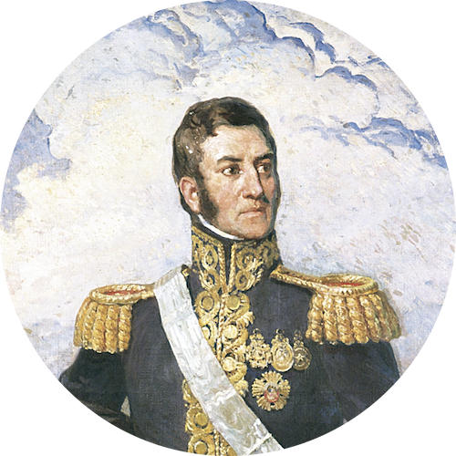

|
Shishuai Hu
|
 |
PhD candidate @ School of Computer Science and Engineering, Northwestern Polytechnical University (NPU)
Room 432, CS Building, NPU Chang’an Campus, Xi’an 710129, China
E-mail: sshu@mail.nwpu.edu.cn
[Github]
[View CV]
|
Biography
I am currently a 1st-year PhD Student at the School of Computer Science and Engineering, Northwestern Polytechnical University (NPU), China,
under the supervision of Prof. Yong Xia.
My research interests mainly focus on deep learning techniques for medical image segmentation,
with particular interests in domain adaptation/generalization.
Education
Ph.D., School of Computer Science and Engineering, Northwestern Polytechnical University (NPU), Xi’an, Shaanxi, China, Sep. 2020 – Present
B.E., Honors College, Northwestern Polytechnical University (NPU), Xi’an, Shaanxi, China, Sep. 2016 – Jun. 2020
News
|